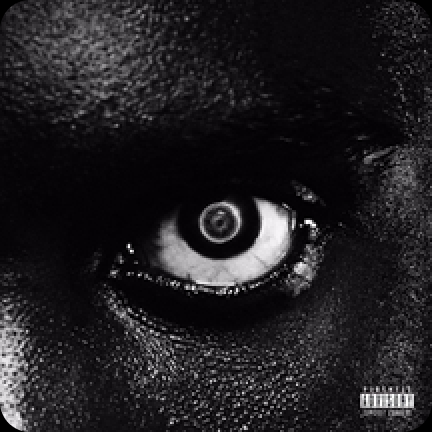
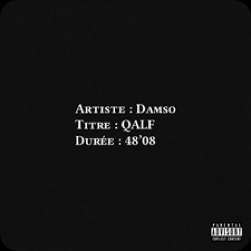

Ses albums
Batterie faible
Batterie faible sorti le 8 juillet 2016 est le premier album de Damso sous le label 92i de Booba qui a été son mentor pendant de nombreuses années
Ipséité
Ips√©it√© sorti le 28 avril 2017 Les gens consid√®rent son second projet comme la r√©ussite de sa carri√®re, cinq morceaux et l‚Äôalbum sont certifi√©s single de diamant üíé
Lithopédion
Lithopédion sorti le 15 juin 2018 Celui-ci a moins été loué par une partie de son public car Damso n’était plus le Damso sombre que tout le monde adorait. Il a essayé de nouvelles sonorités et l’album est plus chantant
QALF
Qalf sorti le 18 septembre 2020 Il était teasé depuis 2015 et était tellement attendu de la part du public, les gens ont apprécié le coté rap pur mélangé au côté plus musical avec des nouveaux styles. Sur cet album on voit bien que Damso est passionné de musique en général